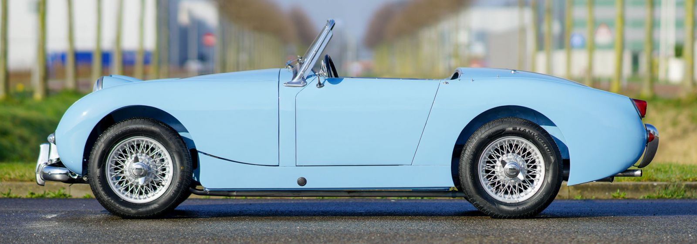
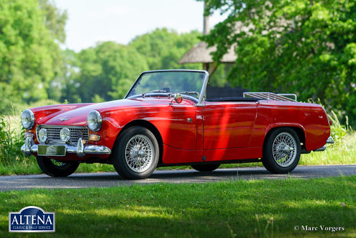
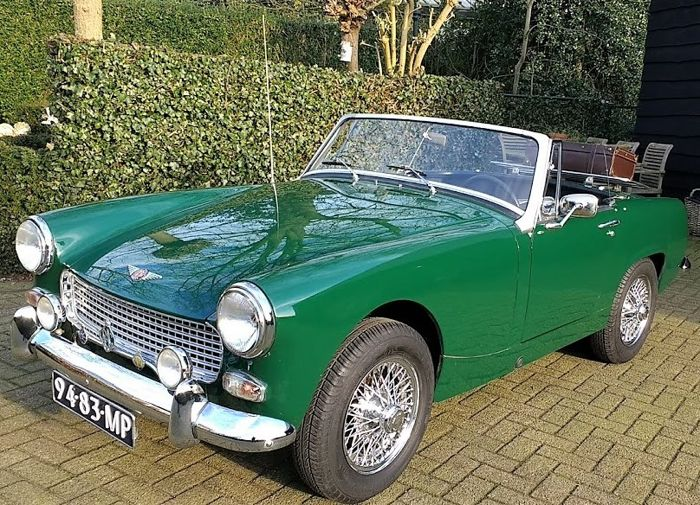
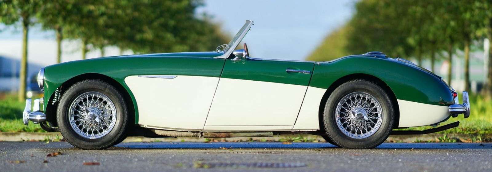

Austin Healey Sprite Mark I

Austin Healey Sprite Mark II

Austin Healey Sprite Mark III
Austin Healey Sprite Mark IV
Austin Healey 100/4
Austin Healey 100/6

Austin Healey 3000 Mark I
Austin Healey 3000 Mark II
Austin Healey 3000 Mark III